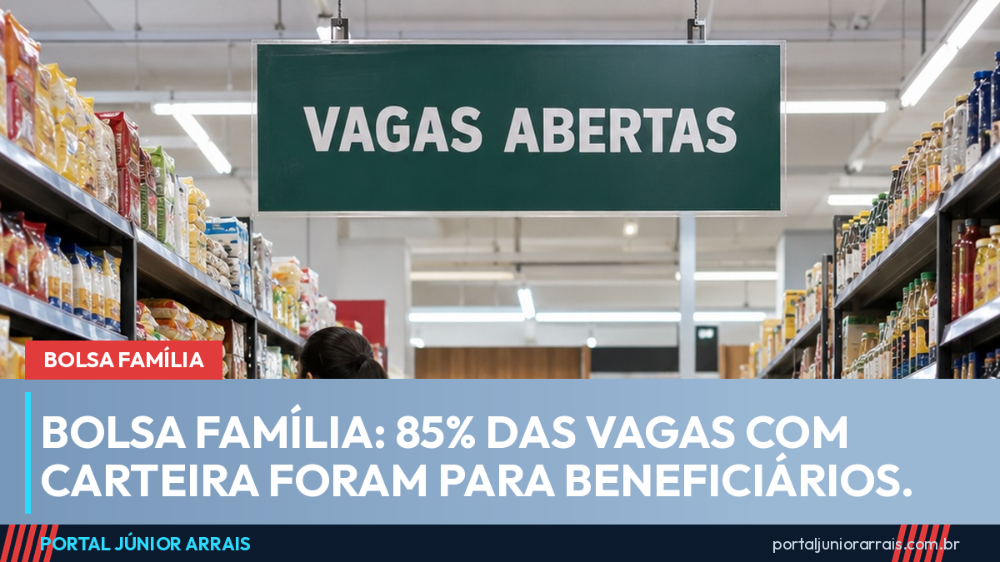
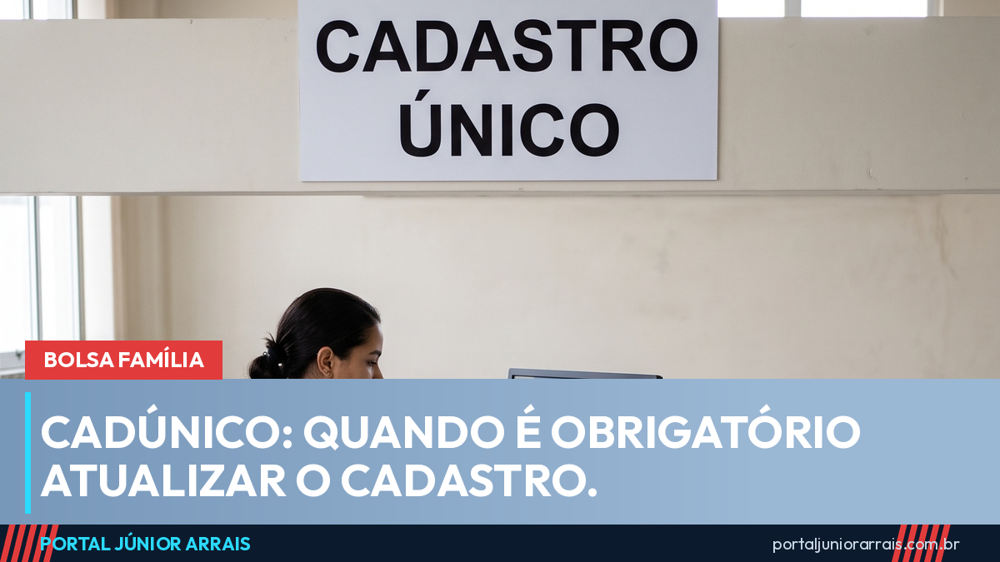
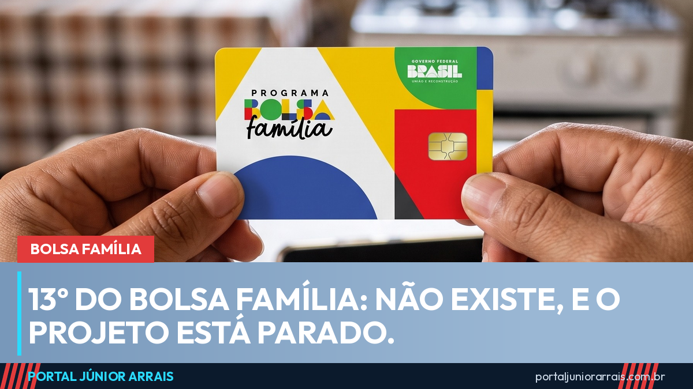
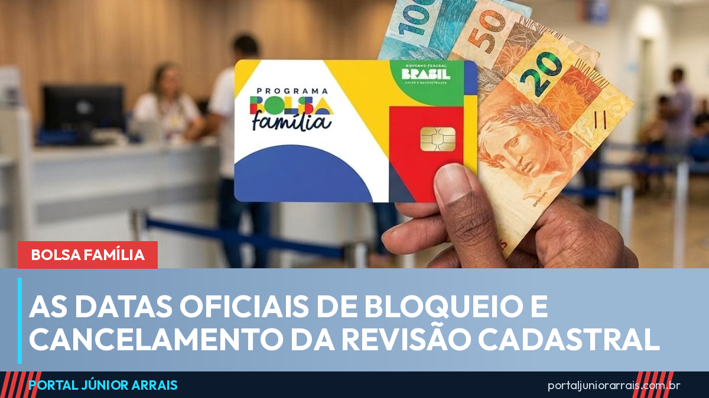

Início › Bolsa Família
Bolsa Família 2026: calendário de novembro, valor e últimas notícias
O Bolsa Família de novembro é pago entre 16 de novembro e 18 de novembro, de acordo com o último número do NIS do responsável familiar. Nesta página você encontra a data de cada final, o calendário do ano inteiro, as cidades que recebem tudo no primeiro dia, quanto o programa paga em 2026 e as notícias mais recentes, atualizadas todos os dias.
Calendário do Bolsa Família de novembro de 2026
O pagamento de novembro vai de 16 de novembro a 18 de novembro. O mês está no calendário especial que o Ministério do Desenvolvimento e Assistência Social (MDS) criou por causa do El Niño: o final 1 recebe no primeiro dia, o final 2 no segundo e os finais 3 a 0 recebem todos juntos no terceiro dia. Pelo cartaz original, o último grupo só receberia em 30 de novembro.
| Final do NIS | Data | Dia |
|---|---|---|
| Final 1 | 16/11 | segunda-feira |
| Final 2 | 17/11 | terça-feira |
| Final 3 | 18/11 | quarta-feira |
| Final 4 | 18/11 | quarta-feira |
| Final 5 | 18/11 | quarta-feira |
| Final 6 | 18/11 | quarta-feira |
| Final 7 | 18/11 | quarta-feira |
| Final 8 | 18/11 | quarta-feira |
| Final 9 | 18/11 | quarta-feira |
| Final 0 | 18/11 | quarta-feira |
Em 112 cidades com emergência ou calamidade reconhecida pelo governo federal, todo mundo recebe no primeiro dia, 16 de novembro, sem olhar o final do NIS. Veja os estados.
Calendário do Bolsa Família de dezembro de 2026
O pagamento de dezembro vai de 10 de dezembro a 14 de dezembro. O mês está no calendário especial que o Ministério do Desenvolvimento e Assistência Social (MDS) criou por causa do El Niño: o final 1 recebe no primeiro dia, o final 2 no segundo e os finais 3 a 0 recebem todos juntos no terceiro dia. Pelo cartaz original, o último grupo só receberia em 23 de dezembro.
| Final do NIS | Data | Dia |
|---|---|---|
| Final 1 | 10/12 | quinta-feira |
| Final 2 | 11/12 | sexta-feira |
| Final 3 | 14/12 | segunda-feira |
| Final 4 | 14/12 | segunda-feira |
| Final 5 | 14/12 | segunda-feira |
| Final 6 | 14/12 | segunda-feira |
| Final 7 | 14/12 | segunda-feira |
| Final 8 | 14/12 | segunda-feira |
| Final 9 | 14/12 | segunda-feira |
| Final 0 | 14/12 | segunda-feira |
Cidades com pagamento unificado em novembro
Quando uma cidade tem situação de emergência ou estado de calamidade pública reconhecido pelo governo federal, por seca, enchente ou outro evento climático, o MDS costuma liberar o Bolsa Família de todos os moradores no primeiro dia do calendário. Em novembro, isso vale para 112 municípios, que recebem em 16 de novembro:
| Estado | Municípios |
|---|---|
| Paraná | 41 |
| Amazonas | 23 |
| Piauí | 22 |
| Rio Grande do Norte | 10 |
| Roraima | 6 |
| Sergipe | 5 |
| São Paulo | 4 |
| Minas Gerais | 1 |
| Total | 112 |
A lista muda de um mês para o outro: a cidade entra quando o reconhecimento federal é publicado e o município pede a medida, e sai quando a situação acaba. A relação com o nome de cada município é divulgada pelo governo na nota oficial do mês.
Quanto o Bolsa Família paga em 2026
Os valores foram reajustados em 15,04% e valem desde outubro de 2026, pelo Decreto nº 13.120, de 17 de setembro de 2026 (reajuste de 15,04%). O benefício soma uma parte por pessoa da casa com adicionais para crianças, gestantes e mães que amamentam:
- R$ 691valor mínimo por família
- R$ 164por pessoa da família
- R$ 173a mais por criança de 0 a 6 anos
- R$ 58a mais por criança de 7 a 17 anos, gestante ou nutriz
Para entrar no programa, a renda da família dividida por todos os moradores tem de ficar em até R$ 218 por pessoa. Para saber o valor da sua casa, use a calculadora do Bolsa Família. As regras completas, como a regra de proteção para quem arruma emprego, estão no guia do Bolsa Família.
Calendário completo do Bolsa Família de 2026
Cada coluna é um final do NIS e cada número é o dia do pagamento naquele mês. Os pagamentos acontecem sempre nos últimos dez dias úteis, por isso o começo muda de mês para mês, e dezembro é adiantado por causa das festas.
| Mês | 1 | 2 | 3 | 4 | 5 | 6 | 7 | 8 | 9 | 0 |
|---|---|---|---|---|---|---|---|---|---|---|
| Janeiro | 19 | 20 | 21 | 22 | 23 | 26 | 27 | 28 | 29 | 30 |
| Fevereiro | 12 | 13 | 18 | 19 | 20 | 23 | 24 | 25 | 26 | 27 |
| Março | 18 | 19 | 20 | 23 | 24 | 25 | 26 | 27 | 30 | 31 |
| Abril | 16 | 17 | 20 | 22 | 23 | 24 | 27 | 28 | 29 | 30 |
| Maio | 18 | 19 | 20 | 21 | 22 | 25 | 26 | 27 | 28 | 29 |
| Junho | 17 | 18 | 19 | 22 | 23 | 24 | 25 | 26 | 29 | 30 |
| Julho | 20 | 21 | 22 | 23 | 24 | 27 | 28 | 29 | 30 | 31 |
| Agosto | 18 | 19 | 20 | 21 | 24 | 25 | 26 | 27 | 28 | 31 |
| Setembro | 17 | 18 | 21 | 22 | 23 | 24 | 25 | 28 | 29 | 30 |
| Outubro * | 19 | 20 | 21 | 21 | 21 | 21 | 21 | 21 | 21 | 21 |
| Novembro * | 16 | 17 | 18 | 18 | 18 | 18 | 18 | 18 | 18 | 18 |
| Dezembro * | 10 | 11 | 14 | 14 | 14 | 14 | 14 | 14 | 14 | 14 |
* Em outubro, novembro e dezembro, a tabela já mostra o calendário especial do El Niño (finais 3 a 0 juntos no terceiro dia). As demais datas são as do cartaz oficial do MDS.
Últimas notícias do Bolsa Família
 É falso que o Bolsa Família foi cortado após a eleição; Gás do Povo também continua29 de out. de 2026
É falso que o Bolsa Família foi cortado após a eleição; Gás do Povo também continua29 de out. de 2026 Bolsa Família de novembro: pagamento começa dia 16 e deve sair em três dias29 de out. de 2026
Bolsa Família de novembro: pagamento começa dia 16 e deve sair em três dias29 de out. de 2026
Bolsa Família: beneficiários ficaram com 85% das vagas com carteira criadas desde 2023, diz FGV8 de out. de 2026- Bolsa Família sobe 15% em outubro: piso vai a R$ 691 e o STF manteve o reajuste22 de set. de 2026

CadÚnico: quando é obrigatório atualizar, mesmo que nada tenha mudado1 de set. de 2026
13º do Bolsa Família não existe: projeto está parado na Câmara e golpistas usam a promessa22 de ago. de 2026
Bolsa Família: as datas oficiais de bloqueio e cancelamento da Revisão Cadastral7 de ago. de 2026- Bolsa Família bloqueado por cadastro desatualizado: o que acontece em cada etapa2 de ago. de 2026
Ver todas as notícias do Bolsa Família
Outros benefícios
Perguntas frequentes
Onde vejo o final do meu NIS?
É o último algarismo do Número de Identificação Social do responsável familiar, impresso no cartão do Bolsa Família e no aplicativo do programa. É esse número, e não o do CPF, que define o dia do pagamento.
Por que o calendário mudou no fim de 2026?
Por causa do El Niño. A Portaria MDS nº 1.221, de 16 de outubro de 2026, concentrou os pagamentos de outubro, novembro e dezembro em três dias: final 1 no primeiro, final 2 no segundo e os demais no terceiro. O governo disse que a ideia é deixar o dinheiro mais cedo com as famílias diante do risco de seca e de enchente.
O que é pagamento unificado?
É quando todas as famílias de uma cidade recebem no primeiro dia do calendário, sem seguir o final do NIS. Acontece em municípios com emergência ou calamidade pública reconhecida pelo governo federal, e a lista muda todo mês.
Quanto o Bolsa Família paga em 2026?
Desde outubro de 2026, nenhuma família recebe menos de R$ 691. A conta parte de R$ 164 por pessoa, e entram por cima R$ 173 por criança de 0 a 6 anos e R$ 58 por criança ou adolescente de 7 a 17 anos, gestante ou mãe que amamenta. Tem direito a família com renda de até R$ 218 por pessoa.
O dinheiro não caiu na data. E agora?
Primeiro, confira se a sua cidade não está no pagamento unificado e se a data é mesmo a do seu final. Se a data passou e nada apareceu, pode haver bloqueio por cadastro desatualizado ou revisão. Não pague ninguém para destravar: procure um profissional de sua confiança para olhar o caso.
Cuidado com golpe
Mudança de calendário é prato cheio para golpista. Nestas semanas circulam mensagens oferecendo "antecipar a parcela", "liberar o 13º do Bolsa Família" ou "confirmar o novo dia de pagamento" por um link, sempre pedindo dados do cartão, senha ou um Pix de "taxa". O calendário especial é automático e ninguém precisa se cadastrar para receber na data nova.
Nenhum órgão do governo cobra taxa nem pede Pix, senha ou foto do cartão para pagar o benefício. Se o valor vier menor, sumir ou ficar bloqueado, não entregue dinheiro a quem promete resolver: procure um profissional de sua confiança para analisar a situação da família.
Fontes oficiais
- MDS: cartaz oficial do calendário do Bolsa Família de 2026
- MDS: calendário especial de outubro a dezembro (Portaria nº 1.221/2026)
- Rádio Gov (EBC): pagamento de novembro e as 112 cidades com pagamento unificado
- Lei nº 14.601/2023 (regras do Programa Bolsa Família)
- MDS: página oficial do Bolsa Família
Página atualizada em 14 de nov. de 2026. Conteúdo informativo — não substitui orientação individualizada sobre o seu caso.
Júnior Arrais · Editor do Portal Júnior Arrais
Comunicador de Ubá (MG). Escreve todos os dias sobre benefícios sociais, INSS, trabalho e economia do dia a dia, a partir do Diário Oficial, de portarias e de fontes oficiais, em linguagem simples. Conheça a linha editorial e a política de correções do portal.